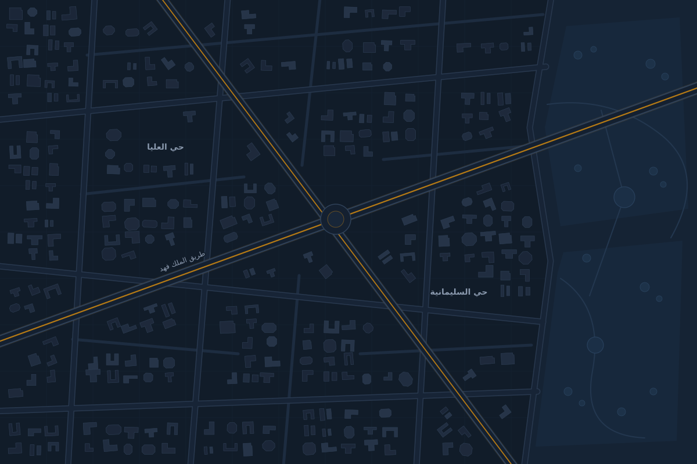

أطلس الحي.
المكان كما لم تقرأه من قبل.
الرياض / المملكة العربية السعودية24°42′ N 46°40′ Eمعاينة تفاعلية · بيانات توضيحية
الرياض، حي العليا

مخطط توضيحي / غير جغرافي
داخل نطاق المسح48 منشأة وخدمة
مؤشر الخدمات التوضيحي92 / 100
مساحة الاستكشاف12.6 كم²
من الخريطة إلى القرار.
تقرير شامل للحي، جاهز للمشاركة بصيغتي PDF و Excel.
تقرير الحي التوضيحي
الرياض، حي العليا · نطاق 2.0 كم
- التعليم
- 12 منشأة
- الصحة
- 8 منشآت
- التسوق
- 21 منشأة
- الحدائق
- 7 منشآت
بيانات توضيحية ثابتة لتجربة التصميم. لا يوجد طلب أو دفع في هذه المعاينة.